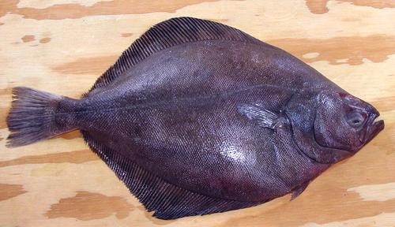
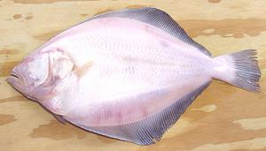

Petrale Sole

[Brill; Eopsetta jordani]
This righteye flounder is native to the North Pacific coastal region
from Southern California at the Mexican border and north around the
Aleutian Islands of Alaska. It can can grow to 27 inches long and 8
pounds but the photo specimen was 18-1/2 inches and 3 pound 5 ounces,
a little larger than typical market size. This fish is mainly an
incidental catch off the Pacific coast from northern Baja to the
Bering Sea coast of Alaska, but there is a designated fishery in
Oregon. It is not considered threatened, Red List status LC
(Least Concern), but in 2009 it was declared overfished off the
US coast.
More on Flounder Family.

Cooking:
Petrale Sole (actually a flounder) is considered
one of the best eating fish on the California coast so fetches a fairly
high price. It's flesh is white, mild and very tender and flaky. It makes
a good substitute for European sole, but keep the cooking simple and the
sauces unaggressive or you might as well save your money and use Tilapia.
It is definitely not a soup or stew fish - it would just fall apart.
Petrale is often pan fried, slowly in butter, or broiled or baked.
It can be steamed or lightly poached, but the pieces should be kept
moderate and poaching time very short (4 minutes) or it will break up
in handling.
Buying:
These fish are often to be found in the
large Asian fish markets here in Los Angeles. I suggest buying whole
fish, as fillets could be anything - mislabeling is rampant for the
more expensive fish, even in sushi bars. The photo specimen was
purchased from a large Chinese / Vietnamese market in Los Angeles for
2019 US $3.99 / pound. It was sold as "Gray Sole" (a much smaller fish),
but I don't think that was a mistake. It was just the only Petrale
they had, so they tossed in with the other flounders.

Cleaning & Filleting:
You will find
complete instructions on our
Cleaning & Filleting Flat Fish
page. That page features the very same fish pictured on this page.
Skin:
The skin of this fish has very little shrink, and
doesn't have a strong flavor, so it can be left on for most methods of
cooking.
Yield:
The photo specimen yielded 50.2% skin-on fillets,
which would be about 40% skin-off. This fish had an unusually large
amount of innards, so some will yield a couple percent more. A factory
cleaned fish would yield up to 66% skin-on.
sf_petrz 060909 - www.clovegarden.com
©Andrew Grygus - agryg@clovegaden.com - Photos on this
page not otherwise credited are © cg1 -
Linking to and non-commercial use of this page permitted